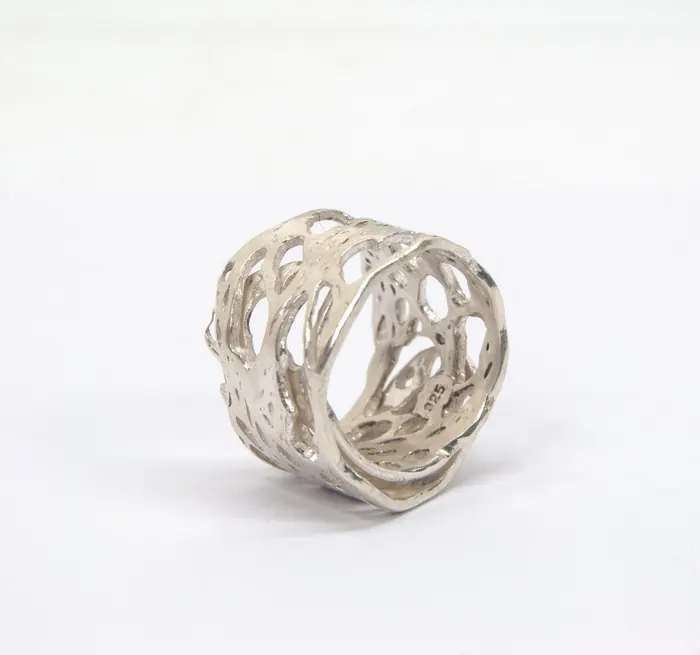

Pulsera de serpiente ajustable
Pulsera de serpiente ajustable
120,00 € IVA incluido
Inicio / La tienda / Anillo erosión

Un anillo ajustable que pretende ser una idea sobre el vacío, la espuma que rompe en las rocas y la erosión que sufren estas. Anillo ajustable a partir de una plancha de plata llena de agujeros, laminando, recociendo y doblando muy poco a poco. Medidas plancha: 18 x 3mm Peso: 7 gramos de plata 925
Envío. Por MRW, de 48 a 72 h laborables en España. Si la joya está hecha sale en 24-48 h; las que se hacen a medida tardan menos de dos semanas.
Tu talla. Si no sabes tu talla de anillo, pregúntale a Mar (abajo a la derecha) y te explica cómo medirla en casa.
Devoluciones. 15 días desde que la recibes, sin usar y en su embalaje. Las piezas hechas a medida no se devuelven.
Cuidado. Plata de ley 925. Pregúntale a Mar cómo cuidarla si vas mucho a la playa.
Pulsera de serpiente ajustable
 Collar estrella de mar
Collar estrella de mar
 Aros estrella de mar
Aros estrella de mar
 Aros caballito de mar
Aros caballito de mar